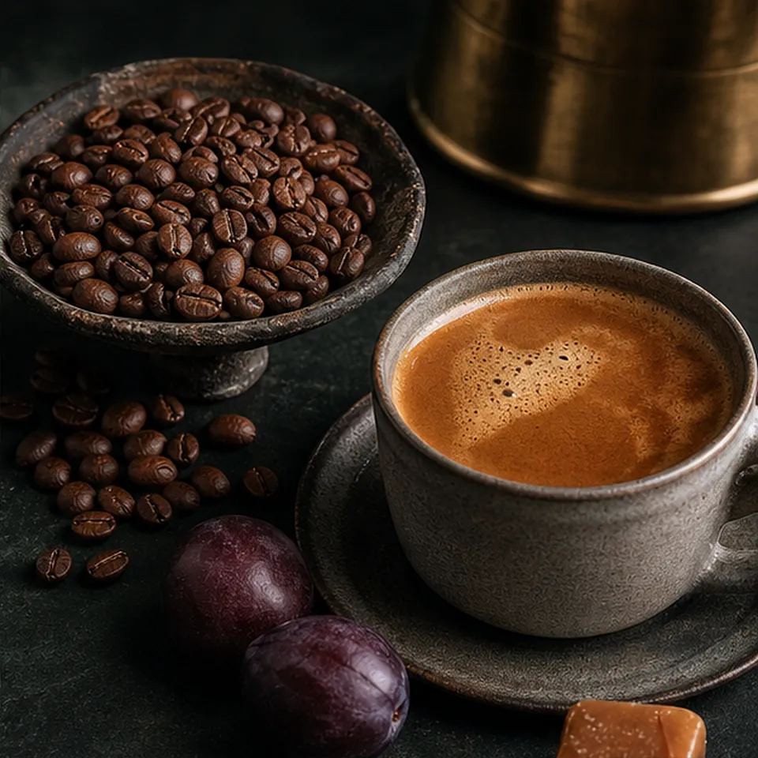

Hinterland / specialty coffee
MAKE ORIGIN USEFUL BEFORE IT BECOMES TECHNICAL.
Specialty coffee customers care about detail, but they decide through taste, brew method and the promise of a better daily cup.
Choose your roast profileTaste-led entry points make origin details, delivery timing and wholesale options easier to discover at the right moment.


Brand feature
TRANSLATE DETAIL INTO A CUP SOMEONE CAN CHOOSE.
The page opens through taste and brew ritual. Origin, producer and processing details deepen the decision after a visitor already knows what they want to drink.

Roast profile
CHOOSE THE CUP BEFORE THE COUNTRY.
Each route connects the choice to a clear taste profile, brew method and reason to return for another bag.
Sweet and round / ColombiaPlum, caramel and cacao for a daily cup you can enjoy as filter coffee or with milk.

Choose a taste profile before the origin details.
Service route
ONE BAG BECOMES A REPEATABLE COFFEE RHYTHM.
A subscription keeps your taste profile and delivery cadence in one simple plan, with seasonal coffees introduced at the right pace. Wholesale coffee begins with service, not a retail checkout.